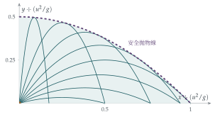

STEP II 2014，第 10 題
繼續之前，請先閱讀題目（原題為英文）。題目載於 STEP Support Programme 的題目資料庫： step.maths.org/questions/14-s2-q10
引子
一座噴泉以相同的速率向四方八面噴水。水柱形成一個閃閃生輝的圓頂，外緣輪廓分明：在裏面，每一點都有水經過；在外面，水一滴也到不了。這條邊界是一條拋物線（parabola），稱為安全拋物線（parabola of safety），因為炮口速率固定的大炮，無論以甚麼角度發射，都打不中它外面的目標。
令人意外的是，這條邊界本身並不是其中一條軌跡。它是整族軌跡的包絡線（envelope），即一條與每條軌跡都相切一次的曲線，就像 第 8.1 節 中直線 \(y = 0\) 與那族拋物線相切一樣。這道題目只需用到二次式的判別式（discriminant），便能把它求出來。
動筆之前
用 \(t\) 表示 \(x\) 和 \(y\)，然後消去 \(t\)。怎樣用 \(\lambda = \tan\theta\) 表示 \(\sec^2\theta\)？
由 \(x = ut\cos\theta\) 和 \(y = ut\sin\theta - \frac12gt^2\)，代入 \(t = \frac{x}{u\cos\theta}\)： \[y = x\tan\theta - \frac{gx^2}{2u^2\cos^2\theta} = \lambda x - \frac{gx^2}{2u^2}(1 + \lambda^2),\] 其中用到 \(\sec^2\theta = 1 + \tan^2\theta\)。
逐步解題
階段 1 固定 \(x\)，改變角度
對於固定的 \(x > 0\)，把 \(y\) 看成 \(\lambda\) 的函數。它是哪一類函數？當 \(\lambda\) 取遍所有實數時，它會取哪些值？
對於固定的 \(x\)，\(y\) 是 \(\lambda\) 的二次函數，首項係數 \(-\frac{gx^2}{2u^2}\) 為負：它是以 \(\lambda\) 為變量、開口向下的拋物線。它有極大值，而且當 \(\lambda \to \pm\infty\) 時，\(y \to -\infty\)。由於它是連續的，所以它會取遍不超過極大值的每一個值。極大值出現在 \(\frac{\mathrm{d}y}{\mathrm{d}\lambda} = x - \frac{gx^2}{u^2}\lambda = 0\) 之處，即 \(\lambda = \frac{u^2}{gx}\)，此時 \[Y = \frac{u^2}{gx}\,x - \frac{gx^2}{2u^2}\Bigl(1 + \frac{u^4}{g^2x^2}\Bigr) = \frac{u^2}{2g} - \frac{gx^2}{2u^2}. \qed\] （等價的說法是：點 \((x, y)\) 可以到達，當且僅當二次方程 \(\frac{gx^2}{2u^2}\lambda^2 - x\lambda + \frac{gx^2}{2u^2} + y = 0\) 有實根 \(\lambda\)，而判別式的條件給出 \(y \leq Y\)。）
階段 2 區域
曲線 \(Y = \frac{u^2}{2g} - \frac{gx^2}{2u^2}\) 是一條開口向下的拋物線，頂點位於 \(\bigl(0, \frac{u^2}{2g}\bigr)\)，即垂直向上發射所達到的高度；它與地面相交於 \(x = \pm\frac{u^2}{g}\)，即最大射程。在它上面或下方（並在地面以上）的每一點都可以到達，而在它上方的點則全都到不了（圖 11.9.1）。
經過嚴格位於曲線下方的一點，有多少條軌跡？經過曲線上的一點呢？
曲線下方的一點對應一個有兩個實根的 \(\lambda\) 二次方程：兩個拋射角，一高一低。曲線上的一點對應重根：恰好一條軌跡，並且在該點與曲線相切。

階段 3 最遠的點
距離 \(O\) 最遠的可到達點（在地面上或地面以上）位於邊界上。把距離的平方 \(x^2 + Y^2\) 寫成 \(x^2\) 的函數。它是遞增還是遞減？
設 \(X = x^2\)。則 \[x^2 + Y^2 = X + \Bigl(\frac{u^2}{2g} - \frac{gX}{2u^2}\Bigr)^2, \qquad \frac{\mathrm{d}}{\mathrm{d}X}(x^2 + Y^2) = 1 - \frac{g}{u^2}\Bigl(\frac{u^2}{2g} - \frac{gX}{2u^2}\Bigr) = \frac12 + \frac{g^2X}{2u^4} > 0.\] 因此，沿着邊界向外移動時，距離不斷增加，而最遠的點就是邊界與地面相交之處，即 \(x = \frac{u^2}{g}\)。最遠距離為 \[\frac{u^2}{g},\] 由平常以 \(45^\circ\) 發射的最大射程一擊達到。■
回顧
把問題反過來問。不問某條給定的軌跡會去到哪裏，而問哪些軌跡會經過某個給定的點。
以參數為未知數的二次方程。對於每一點，\(\lambda = \tan\theta\) 所滿足的方程都是二次方程，而它的判別式決定該點能否到達。
兩個、一個或沒有。區域內的點有兩個角度可以到達，邊界上的點有一個，區域外的點則一個也沒有。
背後的數學
包絡線
單參數曲線族（one-parameter family of curves）\(\mathrm{F}(x, y, \lambda) = 0\) 往往有一條包絡線：一條與族中每個成員都相切的曲線。求法是聯立解 \(\mathrm{F} = 0\) 和 \(\frac{\partial\mathrm{F}}{\partial\lambda} = 0\)，這正是我們對 \(\lambda\) 求 \(y\) 的極大值時所做的事。包絡線在科學中隨處可見。一杯咖啡表面上那條明亮的光曲線，就是反射光線的包絡線，稱為焦散線（caustic）。超音速飛機的音爆，由它所發出聲波的包絡面傳送，那就是馬赫錐（Mach cone）。而在 第 8.1 節 中，一個微分方程（differential equation）的一族解的包絡線，本身也是一個解，即所謂的「奇異」解。
焦點
安全拋物線有一個奇妙的性質：它的焦點就是發射點 \(O\)。（拋物線 \(y = c - \frac{x^2}{4c}\) 的焦點位於原點；這裏 \(c = \frac{u^2}{2g}\)。）每條軌跡也都是拋物線，而所有軌跡的焦點都落在以 \(O\) 為圓心、半徑為 \(\frac{u^2}{2g}\) 的圓上。這可以用能量來解釋：拋射體在高度 \(y\) 時的速率是 \(\sqrt{u^2 - 2gy}\)，在準線（directrix）的高度 \(\frac{u^2}{2g}\) 處為零；而以同一條直線為準線並且經過 \(O\) 的拋物線，其焦點都在那個圓上。
伽利略（Galileo）在 1609 年前後證明了拋射體沿拋物線運動，並且在水平地面上，最大射程出現在 \(45^\circ\)。他的學生托里拆利（Evangelista Torricelli）以發明氣壓計而較為人熟悉，他在 1644 年的著作 De motu gravium 中發現了安全拋物線。對炮手來說，它回答了一個實際問題：究竟哪些目標在射程之內？托里拆利還證明了，經過給定一點的軌跡成對出現，兩者的角度關於該點的方向與鉛垂線之間的角平分線對稱，這就是本題中的高射和低射。
思維技巧
要找出一族曲線所覆蓋區域的邊界，可固定一點，然後問：參數取哪些值時，會有曲線經過這一點？邊界就是解的數目發生變化的地方。
同一個想法，即隨着點的移動來數算解的數目，是光學中焦散線研究的基礎，也是動力系統（dynamical systems）中分歧（bifurcation）理論的基礎，更是突變理論（catastrophe theory）的基礎；突變理論把方程的解的數目可以怎樣變化加以分類。
延伸練習
爆開的煙花。試做 STEP II 2023，第 10 題 （載於 OCR 提供下載的 2023 年試卷 zip 檔案內）。這道題把爆炸產生的粒子看成一個球面，其球心作自由下落，並找出一顆沿着安全拋物面（paraboloid of safety）運動的粒子。
向斜坡上發射。求速率為 \(u\) 的拋射體沿傾角為 \(\beta\) 的斜面向上發射時的最大射程。（提示：直線 \(y = x\tan\beta\) 與安全拋物線在哪裏相交？）證明最佳角度平分斜坡與鉛垂線之間的夾角。
兩個角度。證明能到達點 \(P\) 的兩個角度，關於 \(OP\) 與鉛垂線夾角的平分線對稱。
焦點。證明拋射角為 \(\theta\) 的軌跡，其焦點位於 \(\bigl(\frac{u^2}{2g}\sin2\theta, -\frac{u^2}{2g}\cos2\theta\bigr)\)，並由此證明這些焦點都落在以 \(O\) 為圓心的一個圓上。
延伸閱讀
David Morin, Introduction to Classical Mechanics（Cambridge University Press），第 3 章，當中討論了軌跡的包絡線。
J. W. Bruce, P. J. Giblin & C. G. Gibson, “On caustics of plane curves”, American Mathematical Monthly 88 (1981)。幾何學中的包絡線與焦散線。
E. H. Lockwood, A Book of Curves（Cambridge University Press）。包絡線、焦散線及許多經典曲線，並附作圖方法。